Paramount Communications
SMS Portal
Standard Operating Procedures
Version 1.0 | March 2026 | Confidential
Table of Contents
Complete guide to operating the Paramount Communications SMS Portal.
-
1
Overview & Access
What it is, how to log in
-
2
Navigation & Interface
Layout, tabs, and theme
-
3
Contact Management
Add, edit, tag, delete contacts
-
4
Direct Messaging (1:1)
Send, receive, and view conversations
-
5
Bulk Messaging (Broadcasts)
Send to multiple contacts at once
-
6
Scheduled Messages
Schedule future sends and manage queue
-
7
Message Search
Search across all conversations
-
8
Delivery Status Tracking
Understand message status indicators
-
9
Broadcast History
Review past bulk sends and results
-
10
SMS Best Practices & Compliance
Character limits, segments, and regulations
-
11
Troubleshooting & FAQ
Common issues and solutions
1. Overview & Access
Paramount Communications is an SMS messaging portal built into the WHB Companies Command Center. It enables direct and bulk text messaging to contacts via a dedicated Twilio phone number.
What Paramount Communications Does
- Direct Messaging — Send and receive 1:1 SMS conversations with any contact, displayed in an iMessage-style thread view
- Bulk Messaging — Compose one message and send it to multiple contacts at once, with tag-based group selection
- Contact Management — Maintain a database of contacts with names, phone numbers, emails, notes, and tags
- Scheduled Messages — Write messages now and schedule them to send at a future date and time
- Delivery Tracking — Real-time delivery status updates for every message sent (queued, sent, delivered, failed)
- Message Search — Full-text search across all conversations to quickly find past messages
- Broadcast History — Complete log of all bulk sends with per-recipient delivery status
Accessing the Application
- Open the WHB Companies Command Center in your web browser.
- Click the Paramount Communications card on the landing page.
- Enter the password when prompted by the Password Gate screen.
- You will be taken directly to the Messages view.
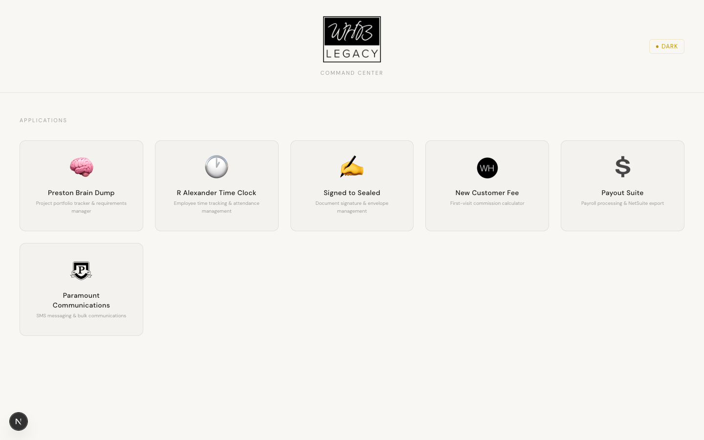
Tip: Your session persists until you close the browser tab. You won't need to re-enter the password during the same session.
2. Navigation & Interface
The interface is organized with a top navigation bar and three primary views accessible via tab buttons.
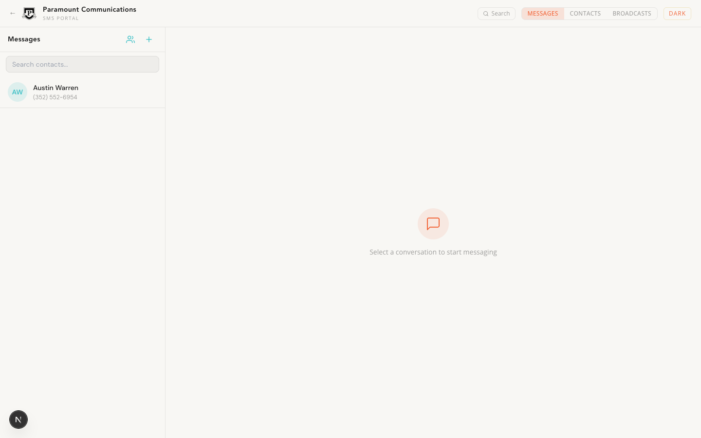
Top Navigation Bar
- Back Arrow (←) — Returns to the WHB Command Center landing page
- Logo & Title — Paramount Communications branding with "SMS Portal" subtitle
- Search Button — Opens the global message search overlay (also accessible via Cmd + K)
- Tab Toggle — Three tabs to switch between views:
- Messages — Conversation list and message threads (default view)
- Contacts — Full contact management table
- Broadcasts — History of all bulk message sends
- Dark / Light Toggle — Switches between light and dark display modes
Dark Mode
Click the "Dark" button in the top-right corner to switch to dark mode. All views and modals adapt to the dark theme. Click "Light" to switch back.
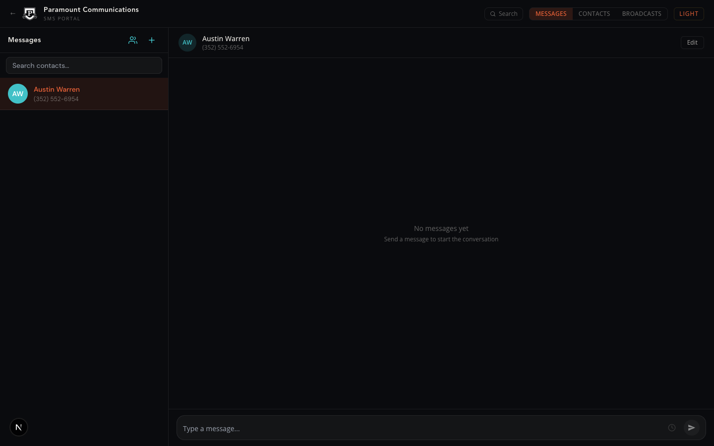
Tip: Your theme preference is saved in your browser and will persist across sessions.
3. Contact Management
Contacts are the foundation of the messaging system. Each contact has a name, phone number, optional email, notes, and tags for organizing into groups.
Contacts Table View
Click the CONTACTS tab to access the full contact management interface.
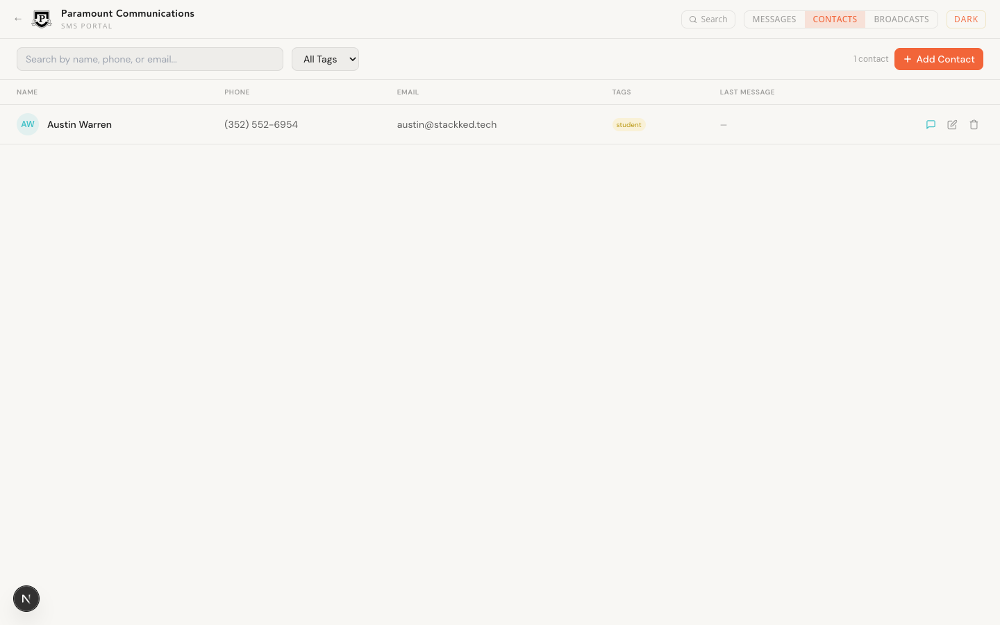
Table Columns
- Name — Contact's full name with initials avatar
- Phone — Phone number in formatted display (e.g., (352) 552-6954)
- Email — Email address if provided, or a dash if empty
- Tags — Color-coded tag badges for grouping contacts (e.g., "student", "vip", "staff")
- Last Message — Date of the most recent message with this contact
- Actions — Three icon buttons: Message (speech bubble), Edit (pencil), Delete (trash)
Searching & Filtering
- Use the search bar to filter contacts by name, phone number, or email
- Use the tag dropdown to filter contacts by a specific tag
- The contact count updates dynamically as you filter
Adding a New Contact
- Click the + Add Contact button in the top-right corner (on the Contacts tab) or the + icon in the Messages sidebar.
- Fill in the required fields: Name and Phone Number.
- Optionally add Email, Notes, and Tags.
- Click Add Contact to save.
Editing a Contact
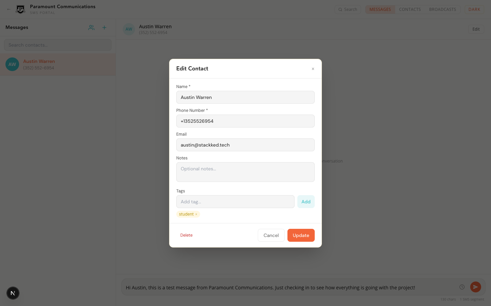
- Click on a contact row in the Contacts table, or click the Edit button in a conversation header.
- Modify any fields as needed.
- To add a tag: type the tag name in the Tags field and press Enter or click Add.
- To remove a tag: click the × next to the tag badge.
- Click Update to save changes.
Deleting a Contact
- Click Delete at the bottom-left of the Edit Contact modal, or click the trash icon in the Contacts table.
- Confirm the deletion when prompted. This permanently deletes the contact and all their messages.
Warning: Deleting a contact is irreversible. All associated messages and conversation history will be permanently removed.
4. Direct Messaging (1:1)
The Messages view provides an iMessage-like experience for one-on-one SMS conversations.
Interface Layout
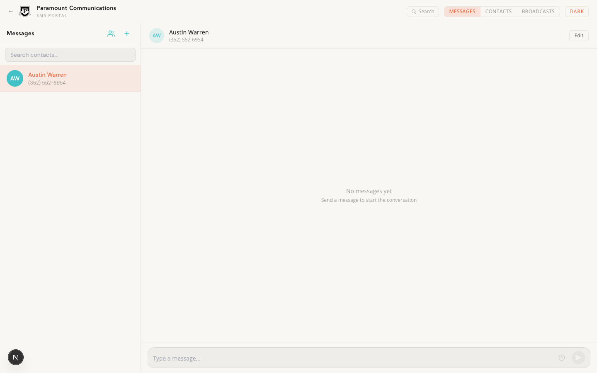
Left Sidebar: Conversation List
- All contacts with conversations are listed, sorted by most recent message
- Each entry shows the contact name, last message preview, and time since last message
- Unread badges appear in red-orange with the count of unread inbound messages
- Use the search bar at the top to quickly find a contact
- Two action buttons in the header:
- Group icon — Opens the Bulk Message modal
- + icon — Opens the New Contact modal
Right Panel: Message Thread
- Contact name, phone number, and initials avatar displayed in the header
- Edit button to open the contact editor
- Messages displayed in chat bubbles:
- Orange bubbles (right-aligned) = Your outbound messages
- Gray bubbles (left-aligned) = Inbound messages from the contact
- Date separators (Today, Yesterday, weekday name, or full date) appear between message groups
- Timestamps shown below each message
- Delivery status icons appear next to outbound messages (see Section 8)
Sending a Message
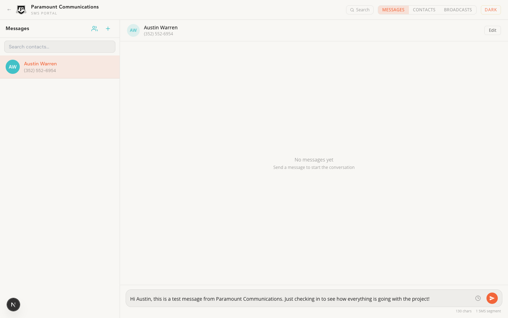
- Select a contact from the left sidebar.
- Type your message in the input field at the bottom.
- The character counter and SMS segment counter will appear below the input as you type.
- Press Enter to send, or click the orange send arrow button.
- Use Shift + Enter for a new line without sending.
Character Counter: Standard SMS messages are 160 characters per segment (GSM-7 encoding). Messages with special characters or emoji use Unicode encoding at 70 characters per segment. The counter will turn orange when your message exceeds one segment.
Receiving Messages
- Inbound messages appear in real-time — no page refresh needed
- If you're viewing a different conversation, the sender's conversation will show an unread badge
- The total unread count also appears on the Messages tab in the navigation bar
- Selecting a conversation automatically marks all messages as read
5. Bulk Messaging (Broadcasts)
Send the same message to multiple contacts simultaneously. Bulk messages are tracked as broadcasts for historical review.
Opening the Bulk Message Modal
Click the group icon in the Messages sidebar header to open the Bulk Message modal.
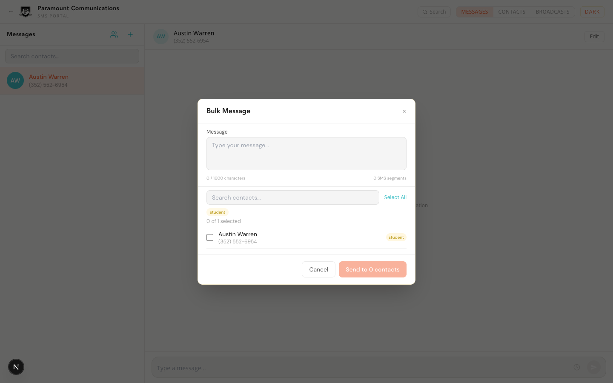
Composing a Bulk Message
- Write your message in the "Message" text area. The character counter and SMS segment counter are shown below.
- Select recipients using any combination of methods:
- Select All / Deselect All — Toggle all visible contacts
- Tag quick-select — Click a tag pill (e.g., "student") to auto-select all contacts with that tag and filter the list
- Individual checkboxes — Check/uncheck specific contacts
- Search — Use the search field to find specific contacts by name or phone
- The selection counter shows "X of Y selected" with the active tag filter indicated.
- Click Send to X contacts to begin sending.
During & After Sending
- The send button changes to "Sending..." while messages are being dispatched
- A progress indicator shows: Sent count, Failed count, and Total
- Once complete, click "Done" to close the modal
- The broadcast is automatically recorded in Broadcast History (see Section 9)
Important: Only active contacts appear in the bulk message selection. Contacts marked as inactive are excluded. Each message is sent individually through Twilio, so delivery status is tracked per recipient.
Tag-Based Group Selection
Tags serve as contact groups. When you click a tag pill in the Bulk Message modal:
- The contact list filters to show only contacts with that tag
- All matching contacts are automatically selected
- Click the same tag again to clear the filter
- You can manually adjust the selection after tag-based filtering
6. Scheduled Messages
Write messages now and schedule them to be sent at a future date and time.
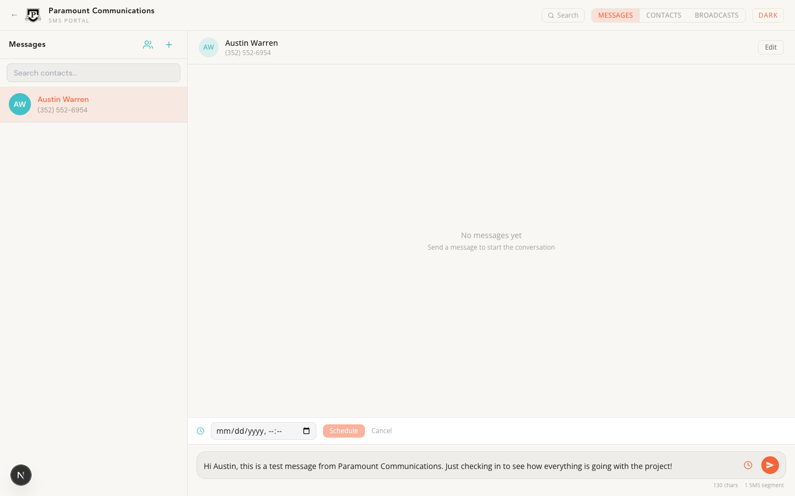
Scheduling a Message
- Select a contact and type your message in the input field.
- Click the clock icon next to the send button to reveal the scheduling bar.
- Select a future date and time using the datetime picker.
- Click the Schedule button (it becomes enabled once a valid future time is selected).
- The message is saved and will appear as a golden pill above the input area showing the scheduled text and time.
Managing Scheduled Messages
- Scheduled messages appear as golden-yellow pills above the message input when viewing the relevant contact
- Each pill shows a truncated preview of the message body and the scheduled date/time
- Click the × on a scheduled message pill to cancel it
- Cancelled messages are marked in the database but not sent
How it works: A background cron job checks for due scheduled messages every minute. When a scheduled message's time arrives, it is automatically sent via Twilio and appears in the conversation as a normal outbound message.
7. Message Search
Search across all conversations to quickly find specific messages.
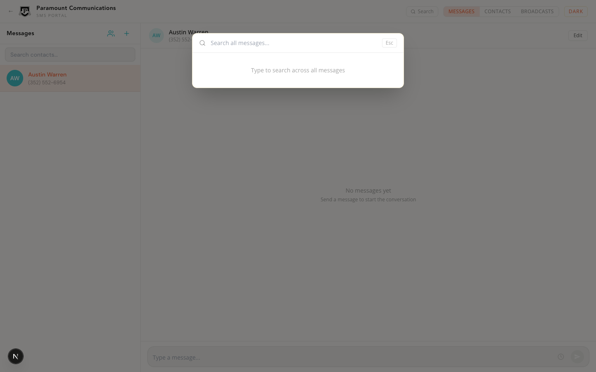
Using Search
- Click the Search button in the top navigation bar, or press Cmd + K (Mac) / Ctrl + K (Windows).
- Type your search query in the search field. Results appear automatically as you type (with a 300ms debounce).
- Results show:
- Contact name and phone number
- Message direction indicator (You: or Them:)
- Message body with the search term highlighted in orange
- Date the message was sent
- Click a result to jump directly to that conversation.
- Press Esc or click outside the overlay to close.
Tip: Search returns up to 50 results, sorted by most recent first. The result count is shown at the bottom of the overlay.
8. Delivery Status Tracking
Every outbound message includes a real-time delivery status indicator that updates automatically as the message progresses through Twilio's delivery pipeline.
Status Icons
| Icon |
Status |
Description |
| Clock |
Queued |
Message has been accepted by Twilio and is waiting to be sent |
| Single checkmark |
Sent |
Message has been sent from Twilio to the carrier network |
| Double checkmark |
Delivered |
Message confirmed delivered to the recipient's phone |
| X circle |
Failed |
Message could not be delivered (invalid number, carrier block, etc.) |
| X circle |
Undelivered |
Message was sent but could not be confirmed as delivered |
Status updates are received in real-time via Twilio webhooks. The status icon next to each outbound message will update automatically without requiring a page refresh.
Note: "Delivered" confirmation depends on the carrier. Some carriers do not provide delivery receipts, in which case the status may remain at "Sent."
9. Broadcast History
Review all past bulk message sends, including per-recipient delivery status.
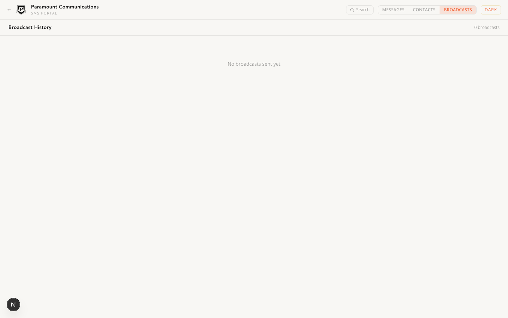
Viewing Broadcast History
- Click the BROADCASTS tab in the top navigation.
- Each broadcast entry shows:
- Broadcast name (auto-generated or custom)
- Message body preview
- Date and time sent
- Recipient count badge
- Click on any broadcast to expand and see individual recipient details.
- Each recipient shows their name, phone number, and a color-coded delivery status:
- Delivered (teal) — Confirmed received
- Sent (gold) — Dispatched, awaiting confirmation
- Failed (red) — Could not be delivered
10. SMS Best Practices & Compliance
Follow these guidelines to ensure effective messaging and regulatory compliance.
Character Limits & SMS Segments
| Encoding |
Characters Per Segment |
When Used |
| GSM-7 (Standard) |
160 characters |
Standard letters, numbers, and basic punctuation |
| Unicode (UCS-2) |
70 characters |
Emoji, accented characters, or non-Latin scripts |
- Messages exceeding one segment are automatically split by the carrier and reassembled on the recipient's phone
- Each segment is billed separately by Twilio
- The character counter in the message input turns orange when you exceed one segment
- Maximum recommended length: 1,600 characters (shown in the Bulk Message modal)
Messaging Best Practices
- Identify yourself — Always include your name or organization in the first message to a new contact
- Keep it concise — SMS is best for short, actionable messages. Aim for 1 segment when possible
- Respect timing — Avoid sending messages before 9 AM or after 9 PM in the recipient's time zone
- Use tags strategically — Tag contacts by category (e.g., "student", "vendor", "vip") for efficient bulk targeting
- Monitor delivery status — Check for failed deliveries and follow up via alternative channels if needed
- Avoid URL shorteners — Carriers may flag messages with shortened URLs as spam
Compliance Notes
TCPA & Messaging Regulations: Ensure you have proper consent before sending commercial text messages. Recipients must be able to opt out. Maintain records of consent. Violations can result in significant fines. Consult your legal team for specific compliance requirements in your jurisdiction.
- Always honor opt-out requests promptly
- Do not send unsolicited commercial messages without prior consent
- Mark contacts as inactive when they opt out (they will be excluded from bulk sends)
- Keep broadcast history for audit and compliance documentation
11. Troubleshooting & FAQ
Common issues and their solutions.
Messages Not Sending
- Check your internet connection — The app requires an active connection to communicate with Twilio
- Verify the phone number — Ensure the contact's number is in a valid format. The system automatically normalizes to E.164 format (+1XXXXXXXXXX for US numbers)
- Check Twilio credentials — Ensure TWILIO_ACCOUNT_SID, TWILIO_AUTH_TOKEN, and TWILIO_PHONE_NUMBER are correctly configured in environment variables
- Review delivery status — If the status shows "Failed" or "Undelivered," the issue may be on the carrier side (invalid number, blocked, etc.)
Not Receiving Inbound Messages
- Check Twilio webhook configuration — The SMS webhook URL in your Twilio console must point to:
/api/paramount/webhook
- Verify the webhook is accessible — The webhook endpoint must be publicly reachable (not localhost in production)
- Check for new contacts — If a message arrives from an unknown number, a new contact is automatically created
Scheduled Messages Not Sending
- Verify the cron job is running — The
/api/paramount/send-scheduled endpoint must be called by a cron job every minute
- Check the CRON_SECRET — The cron endpoint requires a valid Bearer token matching the CRON_SECRET environment variable
- Review scheduled message status — Scheduled messages with "pending" status are eligible to be sent; "cancelled" or "sent" are skipped
Search Returns No Results
- Search queries must be at least 1 character long
- Search matches against message body text only (not contact names or phone numbers)
- Results are limited to the first 50 matches — try a more specific query
Frequently Asked Questions
Q: Can I send messages to international numbers?
Yes, as long as your Twilio account supports international messaging and the number is in proper E.164 format (e.g., +44XXXXXXXXXX for UK).
Q: Is there a limit on how many bulk messages I can send?
There is no app-imposed limit. However, Twilio has rate limits based on your account tier (typically 1 message per second for standard accounts). Very large broadcasts may take several minutes to complete.
Q: Can multiple people use Paramount Communications at the same time?
Yes. The app uses real-time database subscriptions, so messages and contact updates appear instantly across all connected browsers.
Q: What happens if I delete a contact?
Deleting a contact permanently removes the contact record and all associated messages from the database. This action cannot be undone.
Q: How do I change the Twilio phone number?
Update the TWILIO_PHONE_NUMBER environment variable and restart the application. Remember to configure the webhook URLs on the new number in the Twilio console.